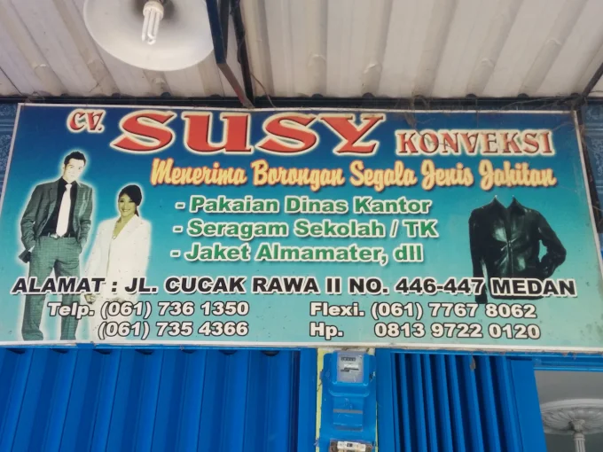

Kepala / Owner
Bertanggung jawab atas kegiatan perusahaan serta melakukan pemeriksaan dan verifikasi terhadap data supplier dan pengajuan persediaan.
CV Susy Konveksi merupakan usaha jasa konveksi di Kota Medan yang memproduksi berbagai jenis pakaian, mulai dari seragam kantor dan sekolah, jas, almamater, kemeja, hingga kaos.

Mengenal perjalanan usaha, bidang kegiatan, visi, dan misi CV Susy Konveksi.

CV Susy Konveksi merupakan usaha industri kecil dan menengah yang bergerak di bidang jasa konveksi dan perdagangan pakaian. Perusahaan berdiri pada tahun 2002 di Kota Medan dan menyediakan kebutuhan pakaian bagi perorangan, perusahaan, instansi, universitas, sekolah, komunitas, serta organisasi.
Produk yang dihasilkan meliputi seragam kantor, seragam sekolah, jas, almamater, kemeja, kaos, dan berbagai jenis pakaian lainnya. Berdasarkan profil perusahaan, jangkauan produksinya telah mencakup berbagai kota di Indonesia dan Malaysia.
Menjadi pusat konveksi yang profesional.
Susunan jabatan dan bagian operasional perusahaan berdasarkan struktur organisasi CV Susy Konveksi.
Bertanggung jawab atas kegiatan perusahaan serta melakukan pemeriksaan dan verifikasi terhadap data supplier dan pengajuan persediaan.
Memeriksa data bahan baku dan kebutuhan produksi serta mengawasi pengendalian persediaan dan jalannya kegiatan produksi.
Melakukan proses penjahitan potongan kain sesuai pola, model, dan pesanan pakaian.
Melakukan proses penyablonan sesuai desain dan kebutuhan pesanan pelanggan.
Melakukan penyelesaian akhir, seperti membuang sisa benang, memasang kancing atau aksesori dan tag, menyetrika, serta mengemas produk.
Mengelola data administrasi perusahaan. Dalam sistem persediaan, menginput data bahan baku, permintaan produksi, dan stok.
Memenuhi kebutuhan bahan untuk produksi. Dalam sistem persediaan, memantau stok, mengelola data supplier, dan mengajukan pengadaan.
Rangkaian kegiatan pembuatan pakaian dari persiapan pola hingga penyelesaian produk.
Proses produksi dilakukan berdasarkan pesanan dan jenis pakaian yang dibutuhkan pelanggan.
Pesanan pelanggan diterjemahkan menjadi kebutuhan model, ukuran, jumlah pakaian, dan bahan baku yang diperlukan.
Kain dibentangkan, diukur, diberi pola, kemudian dipotong sesuai ukuran dan desain pakaian.
Bagian jahit dan sablon mengolah potongan kain menjadi pakaian sesuai model dan permintaan pelanggan.
Produk dirapikan melalui pembuangan sisa benang, pemasangan kancing atau aksesori, penyetrikaan, pemasangan tag, dan pengemasan.
Contoh kategori pakaian dan produk konveksi yang ditampilkan pada profil CV Susy Konveksi.

Produk untuk kebutuhan kantor, sekolah, universitas, instansi, dan organisasi.

Pakaian untuk kebutuhan individu, komunitas, kegiatan, dan identitas perusahaan.

Gambar topi ditampilkan sebagai contoh visual dari lampiran dan perlu dikonfirmasi sebagai produk resmi perusahaan.
CV Susy Konveksi bergerak dalam jasa pembuatan dan penyediaan berbagai kebutuhan pakaian.
Perusahaan melayani kebutuhan perorangan, perusahaan, instansi, universitas, sekolah, komunitas, dan organisasi.
Lihat Katalog ProdukPembuatan pakaian seragam untuk kebutuhan kerja dan pendidikan.
Produk pakaian formal untuk universitas, organisasi, dan berbagai kegiatan.
Pembuatan pakaian kasual sesuai model dan kebutuhan pemesan.
Kegiatan pengolahan pakaian mulai dari pemotongan, penjahitan, penyablonan, hingga penyelesaian produk.
Lokasi CV Susy Konveksi berada di Kecamatan Medan Denai, Kota Medan, Sumatera Utara.
Usaha jasa konveksi dan pembuatan berbagai jenis pakaian yang berlokasi di Kota Medan.


Sosial Media
Media sosial dapat digunakan sebagai sarana komunikasi, informasi produk, dan pengenalan kegiatan perusahaan.
Instagram
Tempat menampilkan katalog produk, variasi desain, dan dokumentasi kegiatan konveksi.
www.instagram.com/susy_kompeksi/Facebook
Sarana membagikan informasi perusahaan dan menjangkau pelanggan serta komunitas.
https://www.facebook.com/susy.konveksitaylor/WhatsApp
Media komunikasi untuk pertanyaan, konsultasi kebutuhan pakaian, dan pemesanan.
081377147346